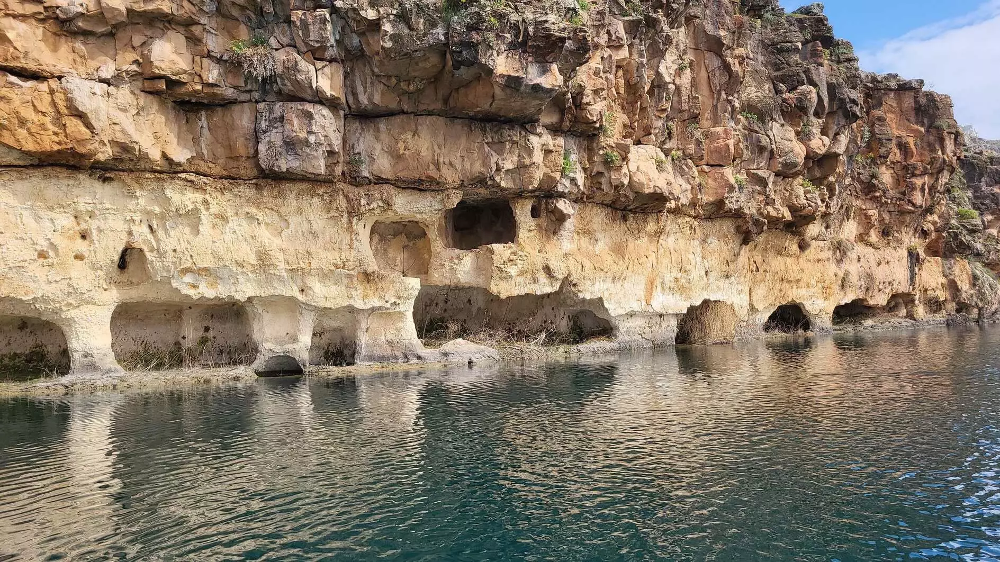
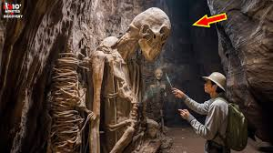
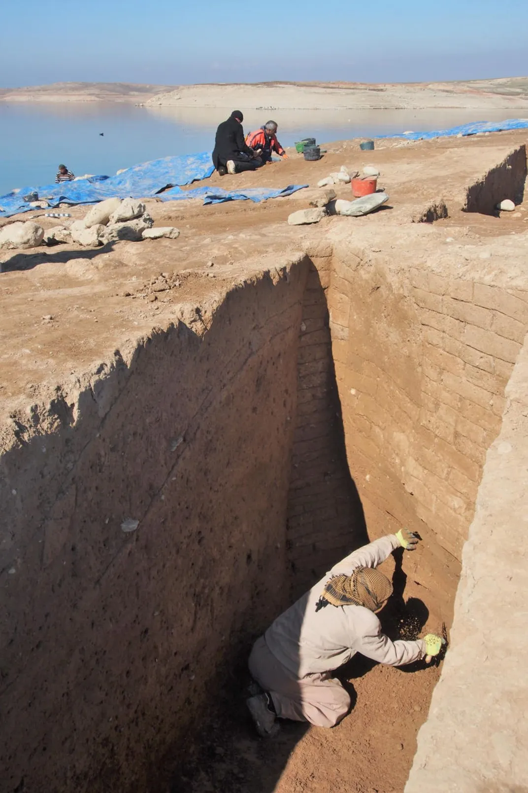

CAVE OF EUPHRATES RIVER

Introduction
The Euphrates River basin contains numerous caves, some naturally formed and others carved by humans, which have served as dwellings and burial sites for millennia. Recent discoveries of these caves, particularly due to lower water levels in the river, have revealed ancient artifacts and evidence of past civilizations. Some caves, like the one near Adıyaman, are multi-story and feature intricate walkways, pits, and tombs, showcasing a rich history
Literary
Alkan further elaborated on the landscape of the multi-story caves lining the banks of the Euphrates River:"There is a very complex area here with multi-story caves and single-story caves on both sides of the Euphrates River. There are ancient walking paths, the Kızılin Bridge, which was mentioned in the Pottinger map in the second century A.D. and is today's monumental bridge, and multi-story caves about 10 kilometers away,". Stating the structural importance of the place, Alkan highlighted the tombs and offering pits belonging to the Roman period. "The fact that there were roads descending to the Euphrates in the ancient period shows that previous transportation here was done by boats," he added.
Archaeologists have discovered some extremely interesting and unusual artifacts as the Euphrates has begun to dry up. Such as a 3400-year-old city, riches, an ancient fortress, and scary caves. Some have even speculated that these caves were jails, however, this is all supposition. Religious leaders have used passages from the book of Revelation as proof that the end times are approaching, although this is, once again, speculative.
History
MITANNI EMPIRE
Some archaeologists believe it was a major city in the Mitanni Empire, which was built 3,400 years ago. More than 100 cuneiform tablets have been found, some of which were inscribed while still in their clay coverings, providing an opportunity to understand what happened after the fall of the Mitanni Empire and the transfer of power to the Assyrians. The German and Kurdish researchers acknowledged that “the results of the excavations showed that the site was an important center in the Mitanni Empire,” as stated by Dr. Hasan Ahmed Qasim, head of the Kurdistan Antiquities Authority.It’s possible the site could be the ancient city of Zakhiku, a major hub in the Mittani Empire, which lasted from roughly 1500 to 1350 B.C.E. One of a number of kingdoms and states founded by the Indo-Iranians in Mesopotamia and Syria, at its peak the empire spanned just over 600 miles, extending from the Zagros Mountains to the Mediterranean Sea.
Research
Upon further exploration, the team discovered the entrance to a hidden cave system that had seemingly remained untouched for millennia. With great care and caution, they ventured inside, only to be confronted with a sight straight out of myth: colossal skeletal remains, larger than any human, lying in a peaceful, almost reverential manner. The sheer size of the bones suggested these beings were not mere mortals, but giants—figures from the realms of legend and folklore. For centuries, stories of Giant have appeared in many cultures around the world, from the Nephilim of ancient biblical texts to the titanic beings in Greek mythology. But these tales have often been dismissed as exaggerations or allegories. Now, however, the discovery of these massive remains beneath the Euphrates River forces us to reconsider those myths.

Parts of the city first arose from the depths during a major drought in 2018, as Smithsonian magazine’s Jason Daley reported at the time. During that brief time, researchers were able to explore a lost palace with massive, 22-foot-high walls, some six feet thick, and discovered “remains of wall paintings in vibrant shades of red and blue.” However, the archaeologists ultimately didn’t have enough time to sufficiently map the city before the waters returned. So when drought struck again this year, a research team was assembled in a matter of days to hurry out to the site, according to a statement from the University of Tübingen. Researchers obtained short-notice funding through the University of Freiburg to examine as much as the city as possible before it was re-submerged.Now, archaeologists have a clearer picture of what this ancient city might have been like, thanks to the team’s mapping of numerous large buildings and uncovering of hundreds of artifacts. Among the buildings found were an industrial complex, a fortification with a wall and towers, and a multi-story storage building. Now, archaeologists have a clearer picture of what this ancient city might have been like, thanks to the team’s mapping of numerous large buildings and uncovering of hundreds of artifacts. Among the buildings found were an industrial complex, a fortification with a wall and towers, and a multi-story storage building.
